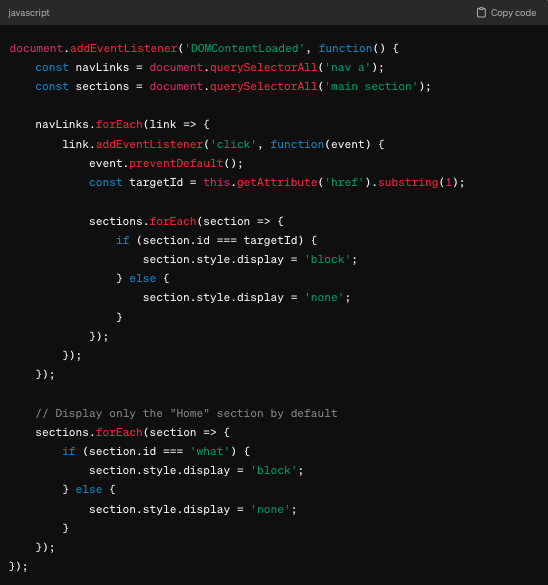

Hi, my name is Matvey, welcome to my web page!
Matvey in Osaka
On these pages I will share more about my hobby of travel photography.
About Me
Hi, my name is Matvey, I've spent a big part of my life in Charlotte, however, having grown up in Europe, it made traveling to other European countries a bit easier and sparked my interest in learning about new cultures and places through traveling.
Climbing a mountain for some reason, even though I'm supposed to bike on it.
I am a sophomore at UNC Charlotte majoring in Human-Computer Interaction. Through study at the university and on my own time I keep learning more and more on the topic of web design which I am also passionate about. I also enjoy such hobbies as listening to music and mountain biking.
Best Times
Here is a list of my favorite times to photograph:
Sunset - The minutes before the sun disappears for the day color the skies with incredible colors, even during seemingly gloomy weather.
Hilton Head, South Carolina
The Golden Hour - This time is a bit different from sunset. It begins about an hour before the sun disappears and colors everything with golden light, an easy way to make ordinary pictures look stunning.
Gatlinburg, Tennessee
Night + Rain - Especially true for urban environments, the lights of the night reflect from puddles and pavement, creating interesting light patterns.
Ikebukuro, Japan
Best Locations
Here is a list of my favorite location types to photograph with examples:
Cityscapes - These can be captured from a mountain, a tall building, or from any other high vantage point. It is always nice to take a moment to take in the scenery and the sounds of the city.
New York, New YorkOsaka, JapanTokyo, Japan
Mountains - While roads such as Blue Ridge Parkway offer great views on mountains, the most unique shots are usually captured after as a reward for hiking, which is perfect for those who like spending time with nature.
Appalachian MountainsThe Grand Canyon
Small streets - Views of cityscapes are usually charged with the energy of a bustling metropolis, however, the metropolis is usually made up of smaller streets which can often have a very cozy atmosphere.
Tokyo, JapanChattanooga, Tennessee
The Process
Over the years I got to travel to many places, along with family, friends, or by myself. On every journey I had took one very common item with me: my phone. I started taking pictures on a very old phone where the quality was not the best, but through finding the right angles and editing I was able to make it work.
Canon M50
Around 2019 I got into Google Pixel phones, which were advertised to have one of the best cameras on the market. It appeared to be true, and it was a drastic improvements in the pictures I was able to take. Though over the years, as I got more into the hobby I wanted to use something more professional. A few years back I got my first mirrorless camera, Canon M50. It was a beginner camera, and although it was tricky to use it at first, soon I was able to appreciate all the features and capture moments even better.
The Reason
Having visited many countries I believe myself to be a global thinker. The world is a wonderful place with plenty of see and explore. Wanting to capture the world's precious moments and views I took on the hobby of photography, to share it with more people.
I have always liked exploring, going on adventures, venturing out into new territory (figuratively and literally), so photography can serve as way to encourage oneself and others of not being afraind of the challenge. Speaking of challenges, it can take some dexterity to capture just the right angle, as well as selecting the right settings on the camera.
Norway
AI Promts
During the production of this website the latest AI text-generating technologies were utilized in order to add a modern feel to the website.
The beginning was simple. After the basic layout of the website was created by hand, in order to test just what AI is capable of, the directions for the project were copied and pasted into ChatGPT. The results were three sections/documents one for HTML, CSS, and JavaScript.
The generated HTML for the navbar and the JavaScript logic for it were used in the project with slight modifications.
HTML

JavaScript
Then, ChatGPT was asked, "Make the CSS look like something as simplistic and modern as the Apple website" so it came up with the following code which was taken and modified to fit the project's requirements.